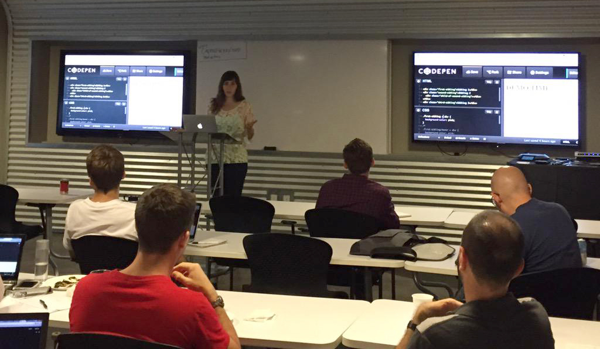

Practical Color Theory for People Who Code
Natalya Shelburne
"Sooooo creative!"

Fine Art does not have a monopoly on creativity
Design is hard work
“I’ll know it when I see it”
“But can you make it really pop?”
“It’s ugly, fix it”
“I don’t like that color, pick a better one”
Nature & Culture
Find food faster

Escape predators

PBS Kids

Color is Information
Logical and predictable
Art School library
>
The internet
Good info, but needs updating for the web.
Bad naming conventions: Ivory black?
Not semantic: phthalocyanine blue?!
Outdated: Indian Yellow??!!
The Color Wheel = Color Relationships

+ Sass! HSLa($hue, $saturation, $lightness, $alpha)
Let's see a Demo!
Thank you!
Practical Color Theory for People Who Code
Natalya Shelburne
Yes, this will be online for you to play with soon!